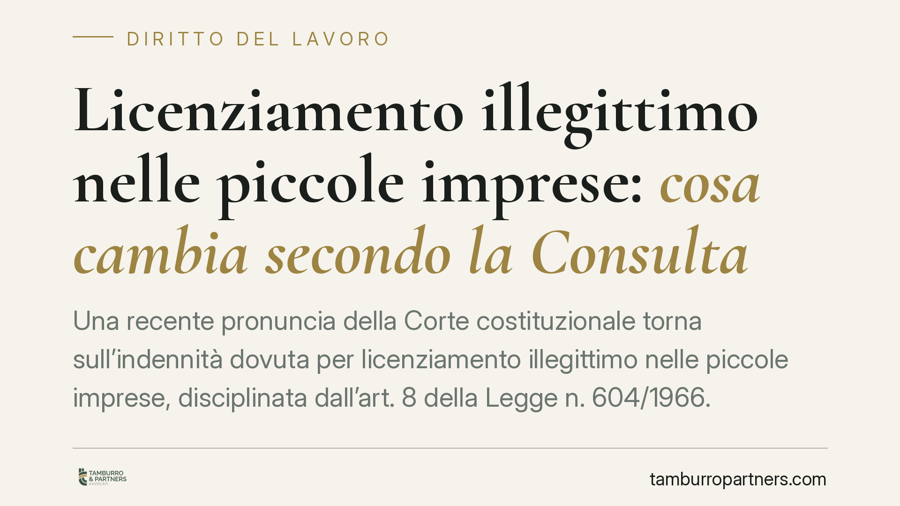

Licenziamento illegittimo nelle piccole imprese: cosa cambia secondo la Consulta
Una recente pronuncia della Corte costituzionale torna sull'indennità dovuta per licenziamento illegittimo nelle piccole imprese, disciplinata dall'art. 8 della Legge n. 604/1966. In attesa del deposito delle motivazioni, proponiamo un inquadramento provvisorio: cosa prevede oggi la norma, quali questioni restano aperte e perché la distinzione tra lavoratori assunti prima e dopo il 7 marzo 2015 resta decisiva.

Il contesto
Secondo quanto riportato dalle prime notizie di stampa, la Corte costituzionale sarebbe intervenuta sul regime indennitario del licenziamento illegittimo nelle piccole imprese, a seguito di una questione sollevata in sede di giudizio del lavoro.
Premessa doverosa: alla data di redazione di questo contributo le motivazioni non risultano depositate e la portata esatta della decisione non è verificabile. Trattiamo quindi la vicenda con la cautela che un tema di questa delicatezza impone. Le considerazioni che seguono riguardano la disciplina vigente e le questioni che la pronuncia potrebbe toccare, non un dispositivo acquisito.
Inquadramento normativo
L'art. 8 della Legge n. 604/1966, nella versione risultante dalle modifiche introdotte dalla Legge n. 108/1990, regola le conseguenze del licenziamento illegittimo nei rapporti di lavoro non coperti dalla tutela reintegratoria (la cosiddetta area della tutela obbligatoria, tipica delle imprese sotto le soglie dimensionali dell'art. 18 dello Statuto dei lavoratori).
È importante leggere la norma per come è realmente formulata. L'art. 8 prevede che, in caso di licenziamento illegittimo, il datore di lavoro sia tenuto, a sua scelta, a riassumere il lavoratore oppure a corrispondere un'indennità. L'indennità ordinaria è compresa tra 2,5 e 6 mensilità dell'ultima retribuzione globale di fatto, ma può essere elevata fino a 10 mensilità per i lavoratori con anzianità di servizio superiore ai dieci anni e fino a 14 mensilità per quelli con anzianità superiore ai venti anni, nelle imprese che occupano più di quindici dipendenti.
Questo chiarimento è essenziale: il tetto di 14 mensilità esiste già nell'impianto della norma per i rapporti più risalenti. Non si tratterebbe, dunque, di un massimale introdotto ex novo. Il punto su cui una pronuncia costituzionale può incidere riguarda semmai i criteri di determinazione e il peso del requisito dimensionale, non la mera comparsa del numero 14.
Resta inoltre fermo l'ambito applicativo soggettivo: l'art. 8 L. 604/1966 continua a operare per i lavoratori assunti prima del 7 marzo 2015. Per gli assunti successivamente trova invece applicazione il regime delle tutele crescenti di cui al D.Lgs. n. 23/2015, con una logica indennitaria distinta.
Implicazioni pratiche
Per il lavoratore. La distinzione anagrafica e contrattuale è dirimente. Chi è stato assunto prima del 7 marzo 2015 e opera in una piccola impresa rientra nell'alveo dell'art. 8 L. 604/1966, con un'indennità il cui importo dipende in misura rilevante dall'anzianità di servizio e dalla valutazione del giudice. Chi è stato assunto dopo è soggetto a un regime differente. Ricostruire con precisione data di assunzione, anzianità e dimensione aziendale è il primo passo per stimare il quadro delle tutele.
Per il datore di lavoro. Le piccole imprese sono il destinatario tipico di questa disciplina. Il margine di discrezionalità del giudice nella quantificazione dell'indennità rende l'esito del contenzioso meno prevedibile di quanto la lettera della norma lasci supporre. La qualità della motivazione del recesso e la correttezza della procedura incidono direttamente sul rischio economico.
Cosa fare in concreto
- Verificare la data di assunzione: prima o dopo il 7 marzo 2015 determina il regime applicabile (art. 8 L. 604/1966 o D.Lgs. 23/2015).
- Ricostruire l'anzianità di servizio: nei rapporti più risalenti incide direttamente sui massimali dell'indennità (fino a 10 o 14 mensilità).
- Accertare la soglia dimensionale: il numero di dipendenti condiziona il tipo di tutela applicabile.
- È opportuno formalizzare motivazioni chiare del recesso e conservare la documentazione della procedura seguita.
- Attendere il deposito delle motivazioni prima di assumere decisioni basate sulla pronuncia: la lettura della sentenza completa è indispensabile per valutarne la reale portata.
Una valutazione provvisoria
Trattandosi, allo stato, di una decisione di cui non sono note le motivazioni integrali, ogni analisi è necessariamente provvisoria. Aggiorneremo questo contributo quando il testo sarà disponibile. Su un tema che tocca direttamente la quantificazione delle tutele, riteniamo preferibile la prudenza rispetto all'enfasi sul dato numerico.
Ogni storia di lavoro ha i suoi tempi.
Se gestisci HR e vuoi un confronto su contenzioso, ispezioni o licenziamenti, scrivi allo studio. Ti rispondiamo entro un giorno lavorativo.